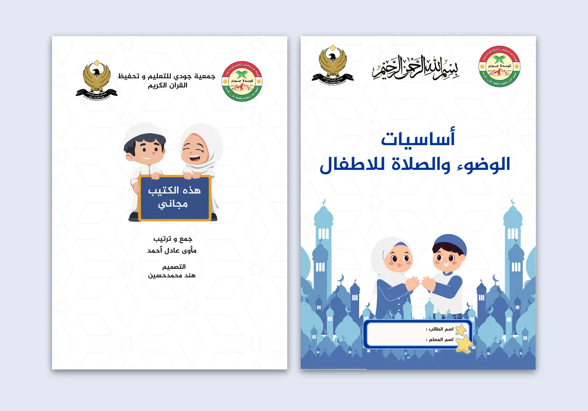
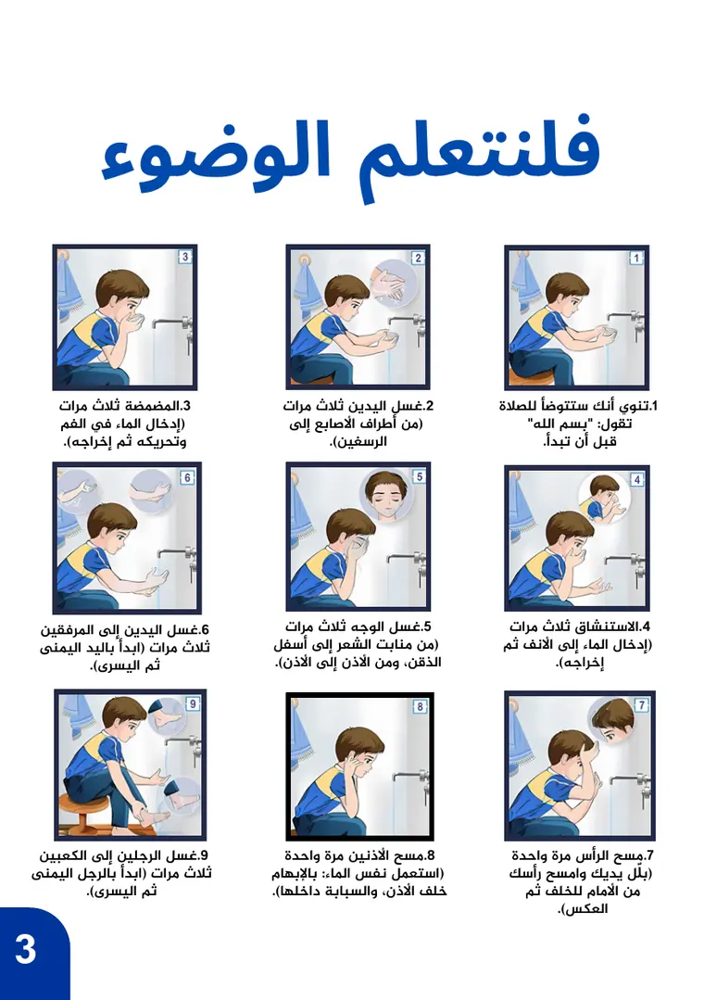
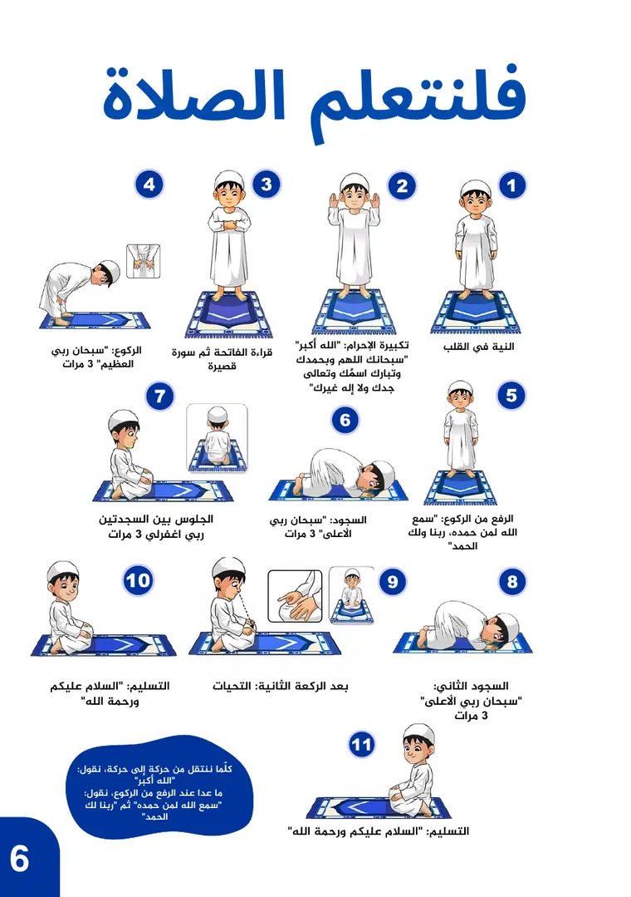

كتيّب / تعليم الأطفال
كتيّب الصلاة:
خطوات يتبعها طفل.
أساسيات الوضوء والصلاة للأطفال
- الجهة
- جمعية جودي للتعليم وتحفيظ القرآن الكريم
- المقاس
- A5، 9 صفحات
- اللغة
- عربي
- دوري
- التصميم

01
نظرة عامة على المشروع
كتيّب مجاني تصدره جمعية جودي للتعليم وتحفيظ القرآن الكريم لتعليم الأطفال أساسيات الوضوء والصلاة. المحتوى جمعته ورتّبته مأوى عادل أحمد، ودوري كان التصميم.
02
التحدي التصميمي
تحويل نص ديني متسلسل إلى صفحات يقدر طفل يتابعها بنفسه.
03
النهج التصميمي
- الرقم قبل الكلمة: الوضوء والصلاة مقسّمين لخطوات مرقّمة، كل خطوة برسم وسطر قصير، فالطفل يتبع الترتيب حتى لو كانت قراءته بطيئة.
- عنوان يخاطب الطفل: «فلنتعلم الوضوء» و«فلنتعلم الصلاة» بدل عناوين جافة، بخط عريض كبير.
- الآيات في إطار: سورة الفاتحة داخل إطار مزخرف، والسور القصيرة بعناوين ملوّنة، حتى يفرّق القارئ بين الشرح والنص المحفوظ.
- أزرق واحد هادئ: نفس الأزرق للعناوين وأرقام الصفحات والرسوم، على خلفية بيضاء بنقش خفيف.
- كتيّب يخصّ صاحبه: خانة على الغلاف لاسم الطالب واسم المعلم.
الصفحات بالترتيب
- 1أركان الإسلام وأركان الإيمان
- 2فلنتعلم الوضوء — 9 خطوات مرقّمة
- 3خطوات الاستعداد للصلاة
- 4سور الفاتحة والإخلاص والفلق
- 5سورة الناس والتشهد
- 6فلنتعلم الصلاة — 11 خطوة مرقّمة
- 7أدعية مهمة
04
المخرجات النهائية
- كتيّب للأطفالA5، 9 صفحات، بالعربية
- الغلاف الأمامي والخلفيمع خانتين لاسم الطالب واسم المعلّم
05
معرض المشروع




عندك كتيّب أو مادة تعليمية؟
أرسل النص، وعدد الصفحات، والفئة العمرية.